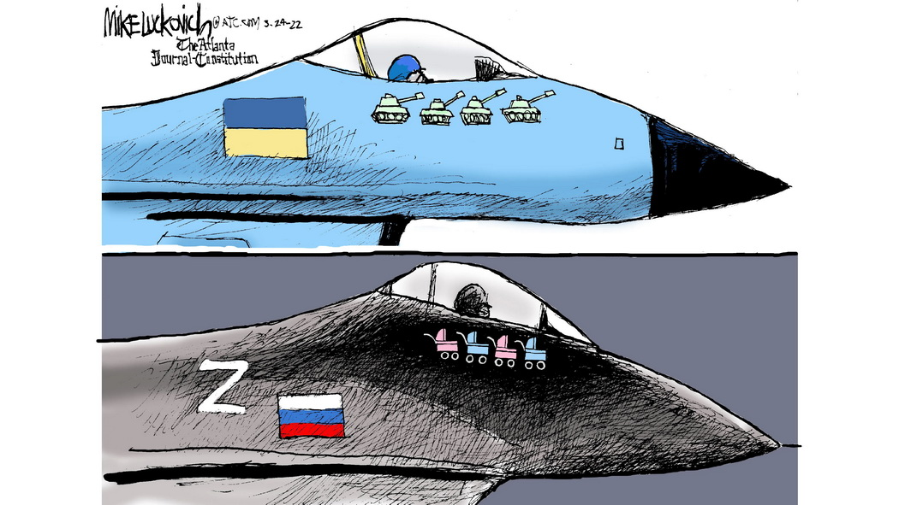

The essence of this war in one picture:
Two other frontlines in picture1 and picture2. All aspects in one phrase: Unpunished evil returns. It is a part of the escalating world war of autocracy against democracy as antagonism between rich (world ruling party) and intelligent (civilization engine). True goal of "collective putin" is infinite power and enrichment, so that Ukraine is only a critical resource and a way to consolidate autocracies. Nowadays, autocrats unite with populists in their opposition to middle class, that is regressive because only the latter are progressors whereas the former are just redistributors.
Be aware of Russian invasion of Ukraine (ongoing Ukrainian genocide by Russia) and unprecedentedly horrible (for a civilized society) war crimes by Russia, and make no mistake that EVERY criminal since 2014 will be punished [we remember, Myrotvorets, rwc.shtab.net, Putin's list, 5am.in.ua, gur.gov.ua, warcrimes.gov.ua, rwc.shtab.net, rgtr.molfar.global, Stryebkov's project, G7 declaration, US database, Wagner data, missile controllers, missile launchers, Parubiy, Zelenskyy, Shuklinov, Marchenko, Poroshenko, collaborates included, propagandists included,... there will be no place to hide, sooner or later, we must follow Israel's approach, it is working]. See accurate live map. It is worth reminding that Foreign nationals should avoid any travel to Russia.
Clarification for Don'tLookUp-ers: yes, it is a genocide, and you are next in the line (unless your are on the dark side). In the post-Soviet epoch, Putin's Russia systematically kill Ukrainians including our first pro-Ukranian president candidate Chornovil in 1999. The first attempt to kill Ukrainians massively was made in 2013 during Revolution of Dignity. Then a true genocide began on occupied territories starting with brutal murder of Rybak. On the RF territory the genocide of non-russians is permanent, the most horrible is the murder 50k civilians in Chechnya in 1999.
Stay immune to Russian propaganda: just assume by default that their EVERY statement is lie, and keep in mind that RF has ENORMOUS disinformation network spread all over the entire world [informnapalm, Sych, Bereza], and EU/US has no protection against this [Hristenzen].
REMEMBER: Russia is a hardcore terrorist state, so to stop the terror, RF must be deputinized/demilitarized (including ban on nuclear weapon and complete wipeout of Putin's mafia). To prevent Russian terrorism in future, we have to remove its feed - slaves and easy money - liberate enslaved nations and internationalize colonized natural resources (like Antarctica, remember that all former EU colonies were "internationalized" except for Russia which is the only remaining colonial country in the world, and I don't see any justification for this exemption). To put it simply, to have a peace, Russian Federation must be decomposed into Russia and non-Russian states (constituting majority of RF territory) [Berezovets, Bereza, Budanov, Chernik, Danilov, Fedyna, Friz, Hudymenko, Kuleba, Lylo, Poroshenko (Щоб добитися миру, маємо путіну влаштувати пекло), Kasparov, Reznikov, Roman Ratushnyi, Wałęsa, Zabuzhko, johnsmith].
IMPORTANT: It is not a usual war, Russians declare extermination of Ukrainians [example, holy war, Zabuzhko] and they target and kill mostly civilians, so there will be no peace until
Moreover, it's time for a TOTAL RECALL including other occupied territories (Belarus, Georgia, Moldova, Finland, Konigsberg, Manchuria, Kurils) and free multitude of nations imprisoned in RF including purely non-Russian regions such as Siberia and North Caucasus (e.g. Chechnya, Kuban, Tatarstan) - Russians exploit those nations as slaves: they use those people as "cannon fodder" in wars and they "suck out" all natural resources from those lands without any payback but with huge ecological harm [CSCE, ombudsmen, Ben Hodges, ISW map, Bereza, Friz, Viatrovych, Gulnara Akbarova, ROK, rosanticenter, Crimea, Lugandon is the best-documented textbook case].
Analysis from Kasparov, Piontkovsky, Khodorkovsky, Felshtinsky, Butusov, also Belkovsky, Bezsmertnyi, Chmut, Chornovil, Dovgopoliy, Eidman, Grant, Illarionov, Istrebin, Klimkin, Koch, Kuzio, Latynina, Nevzlin, Ohryzko, Portnikov, Savchuk, Scherba, Shuklinov, Snyder, Soros, and reposts and SoundCheck from Chekalkin, and map by texty.org.ua
How to support Ukraine financially: A direct targeted support is the best option, whereas blind support of state-controlled organizations is the worst option because you might be fueling our mega-corruption (see example and details below). I guess the best way to support the state budget is to pay legal fees in time and in full, considering any ever-emerging extra fees as a tax on Ukrainian Army and a punishement for electing corruptionists in 2019. For more serious support consider credible private and public organizations. The most credible one known to me is Poroshenko Foundation whose public part is Solidarna Sprava Hromad (ГО Справа Громад). Other organizations and people with clean reputations (per my knowledge) include Повернись живим, Фонд Юрія Бутусова, Фонд Юрія Касьянова, Демократична Сокира, Безпечне небо, Hospitallers Paramedics, Ярина Чорногуз, Fundacja TeofiPolskie Serce, волонтер Антон Сененко, волонтер Анна Домбровська, Валерій Прозапас, Ігор Кондратюк, Юлія Кіян-Кузьменко і Петро Кіян, Петро Шуклінов, Борислав Береза, 5-й канал, Еспресо TV. See also this review. Be aware that your money for army might go to Ze-pocket via extra taxes imposed on some volunteers. If we assume that Ukraine needs 15B$ monthly for parity including 5B$ from personal donations, then 50M nonmilitary Ukrainians worldwide translates into 100$/month/Ukrainian. Unfortunatley, actual donations are of the order of 1$/month/Ukrainian according to these numbers.
Info for pessimists: Always compare current situation with what was before and also with realistic best- and worst-case scenarios. Then you will clearly see that we are lucky and Ukraine history is spiraling up steadily in the last 40 years starting from destruction of Soviet prison of nations in 1980s and till now when destruction of Russian prison of nations becomes possible. Just revisit challenges in terms of opportunities. Looking back to 2013 when Ukraine unofficially was just a part of G8-level Russian empire, I could not even imagine that Ukraine would gradually get a complete separation from that empire in 9 years, whereas Russia would transform into a fading outcast. On a larger timescale, it has been exactly 800 years since Kyivan Rus transforming later into Ukraine is permanently occupied by Mongol Empire transforming later into Russian Empire, starting from our historical defeat at Battle of the Kalka River on May 31, 1223, located on the current front line. So it is an opportunity to get the long-awaited freedom and defeat or even destroy that evil empire.
Info for forcedly mobilized Russians: Everybody understands that you are slaves in RF, and RF considers you as a cannon fodder (RF needs a few thousands per day, median lifetime of mobiks is 5 months), so you have only a few options to save your life: 1) protest (you will save millions of lives); 2) leave RF (warriors can then join Freedom of Russia Legion or Russian Volunteer Corps or any other Russian antiputin forces); 3) surrender ASAP in case if you are sent to a front-line (preferably with a salvage) [Zelenskyy (in Russian from 3:45), Vera Mironova]. In case if you just want to exchange your life for LADA, remember that it is a usual Russian "lohotron": in reality your family will get a grocery set or a bag of "pelmeni", and also, according to official Russian statistics 9 people out of 10 are "missing" rather than "killed in battle". See the project "Хочу жить".
Many thanks for everybody helping Ukraine: Ukrainian Army including Zaluzhnyi + volunteers + core supporters including health and emergency and funding and those who was killed or wounded, president Poroshenko and other pro-Ukrainian forces, mayor Klitschko and other pro-Ukrainian government, international partners including Poland and Baltic countries, UK, France, Germany, pro-Ukrainian part of US, Canada, Czechia and other EU countries, Japan, many other countries as well as all people standing against Rashism and corruption [IFL support tracker]. Your help saves millions of lives and trillions of dollars because analysis of occupied territories clearly shows that Russia planned to repeat Stalin genocide devastated this region in the past century.
Shame to everybody who uses this war for own enrichment and usurpation of power [Bereza, Zozulia]. See the long list of our top corruptionists and power usurpers below. This is accompanied by internal war against democracy and opposition (political and economic repressions) run by Kolomoyskyi-Zelenskyy-Yermak autocratic regime: majority of oppositioners are under repression or persecution by this regime [Ariev].
Shame to countries supporting war: ... it was a shame in 2022. Now it is more like WW3 because everything is colored, and the dark side is uniting and using every opportunity to divide-conquer-and-grow. The dark side is Russia, Iran, North Korea, Hamas. The gray side (the main reason why this war cannot be stopped) is the rest of autocracies including China (darkening gray), Orban's clan in Hungary, Turkey, and "my-business-first" part of US/EU/UA. The defending side is the democratic world under the permanent attack to divide and conquer. [Khodorkovsky]
Shame to companies supporting war: Auchan and Leroy Merlin supply their products to Russian Army
List of companies doing business with Russia (OTP bank, Raiffeisen Bank)
Everybody asking cynical or stupid questions why Ukrainian Army retreat must read this first because no parity = no win, i.e. with "too little, too late" support of Ukraine by EU/US contrasted to enormous technological and financial investments into pre-war RF by EU/US, the war could be stopped only if RF would stop invasion for some internal reasons [Illarionov,Kasjanov, Firsov, Herbst, Snyder, Vernivskiy].
Parity achieved by now:
Parity to be achieved:
This war could be prevented (as early as in 2008) or stopped (as early as in summer 2022), but instead before Feb 24 the world, capable to crush Russia by a finger, was ready to accept a total destruction of Ukraine, and after Feb 24 we see endless escalation of the conflict because the world destroys Russian army slower than Russia rebuilds it using world's money and products. This indicates existence of some underlying fundamental problems in today's world. Otherwise, it is impossible to comprehend evident paradoxes:
There is just no enough will to stop the war:
Report corruption to zakrytazona and other anticorruption organizations. Check also: prosud.info. Remember: зелені це недостиглі червоні. Ze-Ukraine in three words: madmen lead the blind (сліпих ведуть безумці).
Throughout the history of Ukraine, our main battlefield has been not on the frontline with external agressor but inside the Ukraine between democracy and autocracy. If democracy loses, a war comes in: Ya-regime brought invasion of 2014, Ze-regime brought invasion of 2022.
Our MEGAPROBLEM is a disastrous autocratic mafia-like russian-rooted Ze-regime (Kolomoyskyi-Zelenskyy-Yermak regime). The democracy ended right after Zelenskyy came to power in 2019 with dissolution of parliament and replacement of the entire government (from central to regional) with loyal people. Then heavy corruption and maladministration started, followed by usurpation and repressions, and the war of 2022 was used to install a practically autocratic regime by 2024 (диктатура пролетаріату і реваншистів). Russian army and Ukrainian corruption EQUALLY [Blinken, Kazanzhy, Grant, Prozapas, Sebastianovich, Politico] complement each other in a destruction of Ukraine. The key difference is that Russian army is weak and becomes weaker whereas Ukrainian corruption is strong and becomes stronger, so that during the war when our army is fighting with invaders for our freedom, Ukrainian government is fighting with our opposition against our freedom; repressions in modern Ukraine are quickly approaching the repression and mafia model of Putin's regime [johnsmith, Lemenov, Prozapas]; also traitors, dilettanti, and criminals are numerous at all levels of the country government system, whereas personnel changes are usually "bad to worse". On top of that, nobody will help a corrupted country. And phrase "why Russian soldiers should die for oligarchs money" can be applied to any corrupted country. The difference between autocratic regimes of Putin or Zelenskyy and democratic governences of EU or Poroshenko became very sharp in 2023 -- all mentioned here "nasty things" (зашквари) of Ze-regime are absolutely inconsistent with democratic world.
This problem MUST be solved by enforcing a permanent comprehensive control of Ukrainian government by EU and US supervisory boards [Gontareva], because every cent invested into Ukraine without a control will be stolen by corruptionists for sure. In fact, the main obstacle for financial support of Ukraine is that US/EU wants to give money to Ukraine whereas Zelenskyy wants money to be given to his team (and we know well how brutally these money will be misused). In this context, Ukrainians and Russians make the same mistake: they want to live by EU standards but don't want to follow EU standards.
Diplomatic consequences of our corruption are catastrophic because nobody will support an autocracy either it is offensive or defensive [Newsweek, Zelenko, Honcharenko]. On top of that, a puzzling persistence of many foreign politicians to communicate with Russian ruling "elites" but look down on Ukrianian ones (those emerged after 2019) might be caused by a stark contrast between Russian and Ukrainian powerholders: both are corruptionists and power usurpers, but the former are well-educated experienced professionals and world-recognized oligarchs whereas the latter are uneducated diletants seized power (proletariat) and world-condemned embezzlers (Kolomoyskyi). Many other international problems have been created by Ze-team, e.g., with Poland.
Demographic consequences are horrible: the population of Ukraine steadily and steeply declines in the last 30 years from 52M in 1990 (#22 in world) to below 40M now (#41 in world) with detrimental age distribution trend. Sharp contrast between Ze-centered Ukraine and people-centered democratic countries worsens the situation [Stepula]. Another demographic problem is moral and intelectual degradation of the proletariat accompanied by the brain drain and elimination of intelligentsia [Chekalkin, Prozapas].
Social consequences might put our country into dark ages of multivel banditism from Portnov-Tararov down to street violence: Maletych case
Military consequences are terrifying: Ze-Ukraine cannot run a sustainable war against Z-Russia, because Putin's corrupted government reinforces army, whereas Zelenskyy's corrupted government reinforces corruption. Ze-regime compensates lack of drones, shelters, ammunition, and preparation by humans life - is there a difference from Z-regime? Is there any evidence that Ze-government values human life? Does Ze-government use human resources properly? Definitely not: in Z-Russia criminals and uneducated people go to the frontline whereas highly qualified specialists work in industry and government. In Ze-Ukraine everything is upside down, criminals and uneducated people go to government whereas no evidence exist that highly qualified specialists are used properly [uncertain state strategy, Sergiy Cherednik, Yuri Lushchai, Mykola Petrenko, Olexandr Polivodskiy, Sviatoslav Romanchuk, Ruslan Shulipa]. Military personnel purges starting from generals down to officers destroys our army from inside [Bereza]. Military mobilization in Ze-Ukraine has serious motivational problems [Gai]: What our Army is supposed to defend? Ze-clan? Ze-property stolen from Ukrainians? Bandits and corruptionists? Autocracy and repressions? Povetry and economic devastation created by Ze-regime? Or those whom "there is no difference" ("Какая разница")? Чи 4-разового уклоніста Зеленського? Why do we have 0.5M mobilization deficit with 13M Ze-voters? Oppositioners die at front line while Ze-clan get medals in rear [LidaSha-Chekalkyn]. Even more, Ze-regime transformed mobilization into slavery, "mogilization" (one-way ticket), corruption, and repression [Ariev, Bereza, Bulakh, Gula], and now fixed this by law [voting, Ariev, Poroshenko]. Ze-regime sends people to the frontline unprepared [Bogdan Zatula]. Ukraine has no future with Ze-government. [Chekalkin, Cherniak, Dombrovska]
IMPORTANT: There will be no bright future for Ukraine until its decorruption and punishment of ALL intentional and unintentional criminals especially top corruptionists and those who created national security breaches and persecuted their opponents.
Timeline:
References:
Problem #1: Poor military organization of Ukraine and substantial resource superiority of Russia. This problem was noncritical on a short scale, but the blitzkrieg has now transformed into a large scale war of attrition, requiring a long-term military endurance of the entire country [Nasarov, Butusov]. So far we were lucky because Russia made more errors than us, but this luck is not eternal. We hope that Russians will stop this self-destructive war but it might not happen soon. Russia has substantial economic, demographic, geographic, and armory superiority over Ukraine. Therefore we can win only by more efficient military organization and more efficient use of all available resources. For military organization see Grant's article. For resource parity see kasparovru, Illarionov 1, Illarionov 2, Illarionov 3: we are still far away from it, and the main obstacle here seems to be inability of our government to manage our country efficiently during the war – Zelenskyy's clan came to power for "shashlyky" and can help Ukraine only within context of their personal profit ("шкурних інтересів") [johnsmith]. Moreover, many citizens stand aside from the war [Nozhevnikova] - it is the responsibility of our government to engage their social responsibilities - every Ukrainian elector must support our army either by work or by money.
Problem #2: Weakening of modern democracy vs strengthening of autocracy. This is a world war of autocracy against democracy ignited in 2007 [Illarionov 2024, Illarionov 2023, Illarionov 2022, Kasparov, Fursa, Haley, Inozemtsev, Klimkin, Lutsenko, Nevzlin, Shuklinov, Nevzlin, Bloomberg, poll in Gaza]. In this war, populism, formalism, and dirty money seem to be the main vulnerabilities of modern democracy. How vulnerable is our democratic world if such a miserable jerk (hu*lo in Ukrainian) as Putin can terrorize it for years. Evidently, modern autocracy has "operational superiority" over democracy: Economically depressed Iran and North Korea readily provides any weapon in any amount to Russia, whereas for economically superstrong EU/US a transfer of every single item of each type of weapon becomes an NP-hard problem. Looks weird, but after our every major attack far beyond the frontline, US makes a statement that they do not provide us offensive weapon and do not recommend us to attack Russian territory. Overall, the situation with military help is best described by "Give me the gun" scene from The Fifth Element. As pointed out by Russians themselves (see e.g. Potapenko), Western politicians often fully misunderstand Russia (see e.g. US experts in 2015) considering it as a regular state, but in fact, internally it is a lawless empire whose leader is a dictator and citizens are graded slaves, whereas externally it is a terrorist organization with unprecedentedly high internal resources to support the terror. That is how bad guys, dirty money, and all kinds of fakes are exported from Russia to Europe as clean and lawful stuff. It was a series of political "shortsightedness" of US/EU leaders in 2007-2016 including Obama, Merkel, Hollande, Sarkozy trying to extinguish a grease fire with water, that after "probe" invasions of 2008 and 2014 resulted in 2022 in the largest war since WWII [Johnson, Lucas] and follow-up conflicts escallations all around the world. Hong Kong and Xinjiang internment camps are other important parts of this story. There are also relevant discussion on economics by Angus Deaton. Illustrative examples:
Problem #3: Antiukrainian propaganda in Russia, Ukraine, and beyond, escalating since 2000s (strong enough to make many people mentally sick [Meduza, Obozrevatel, Russians in EU], including #какаяразница political force ruling Ukraine since 2019) [Mingarelli]. Starting from Sep, there is a steady worldwide progress in immunization against Russian propaganda. Russian church is the largest antiukrainian organization in Ukraine, so it must be completely removed from Ukraine ASAP. Surprisingly, in 2024 ZDF journalist Armin Coerper actively participates in Russian propaganda (many thanks to ZDF to put Coerper's report into the right context).
Problem #4: Export of corruption and banditism from Russia with enormous funding (large fraction of RF budget, capable to corrupt a US senator or a Chancellor of Germany not mentioning leaders of small countries like Serbia or Hungary, or have lobby in US Congress) [Eydman, NashiGroshi]. In this way, a large fraction of EU/US politicians and businessman unintentionally became accessories of state-wide banditism in Russia, resulting in the largest robbery of a country by absolute sum of money washed out of Russia in 1990-2022 [Patrushev case]. George Santos is the most recent example of how dirty are politicians funded by Russia. Banditism of Wagner group in Africa is example of other kind [Belkovskiy@32:00].
Developed countries and especially EU are obliged to support Ukraine as long as we assume that at the current evoluton stage of our civilization, lead countries are responsible for the global security (exemplified by UN, climate, waste, and other global initiatives), because Russian aggression against its neighbors would not be possible without an external financial, technological, and political support (see the above problems for clarification of this support). Moreover, after establishment of autocracy in Russia in 2000s and occupation of Georgia in 2008, developed countries conciously continued to support aggressive and repressive putin regime. To make it clear: stop this support and Russia will collapse in a few years in the sense of not being able for any aggression. See also analysis by Illarionov of Mitt Romney's comment explaining why help in the amount of 1% of US military budget is insufficient to solve the Russia-terrorism problem, but any investments into demilitarization of Russia are super-beneficial for the global security. In addition, bellicose autocracies such as putin regime use "divide and conquer" approach, so by taking control over Ukraine RF gets substantial human and nonhuman extra resources (roughly speaking 25% of Ukrainians will be eliminated and the rest will be enslaved as was repeatedly done in the last 800 years) to invade the next EU country in a chain. [Piontkovsky].
Because of complete failure of international agreements, they should be considered as geopolitical tools. This war shows that countries can sign any document but in reality that does not impose any obligations. The most blatant example is Budapest Memorandum - a meaningless piece of paper created a huge security breach for Ukraine. Basically, Ukraine's was deprived its long-range attack capabilities by the memorandum signatories including Russia and US, but now when Russia attacks us with long-range missiles, those signatories don't want to give us a proper counter-weapon. Moreover, U.S. Altered Himars Rocket Launchers to Keep Ukraine From Firing Missiles Into Russia. Some agreements are simply antihuman: We have to pay 10k per Russian captive that exceeds budget of majority of Ukrainians.
Because of complete failure of old international organizations (OSCE, UN, Interpol, WHO, Red Cross, Amnesty Int, church) in fulfilment of their core functions, countries should rely on their-country-focused international unions and organizations, considering the rest of organizations as dirty geopolitical tools. References [Chornovil, Truss, Klimkin about UN, Milei about UN, Nevzin about UN, terrorists in UN, Heritage about Interpol, Barchuk and Lemberg and "Angel of peace" medal about church]. It is a pity that UN has been transformed into a tool for legalization of offense, war, invasions, genocide, massacre and other horrible things, where truth is replaced by representative majority opinion: roughly speaking, half of the world can kill another half of the world and proove its innocence by majority. See examples how UN and Red Cross are used to help HAMAS terrorists.
The length and aftermath of this war are fully determined by developed countries by balance of their intentional support of Ukraine (amount and quality of weapon) vs unintentional support of Russia (amount of superprofit they get from Russian corruption). Of course, the required balance itself depends on strength of Russian army and Ukrainian corruption, but these factors are less variable.
It is clear that majority of Russians should be restricted from entering civilized countries (a standard rule applied to citizens of terrorist states - every Russian must get clearance first) because roughly speaking every second Russian is a bad guy or barbarian or zombie, and you don't know how to filter them out at the border. In the worst case scenario they are KGB-agents, terrorists, murderers, and saboteurs, whereas in the "light case" scenario they constitute the "Fifth column" propagating violence in various forms from verbal and hooliganism to criminal cases including beating, organized banditism, and theft [Honcharenko]. Also, we should always REMEMBER that Russia can attack any country with non-negligible fraction of Russian-thinking population (e.g. Germany) to "save russkiy mir". Importantly, Russians kill people consciously, i.e. whatever they say on camera in a civilized world, they follow their leaders upon first call like terrorists [Bereza, VolunteerInfo]. The fact that the percentage of rashists among russians is very high is given by number of "likes" for this Paris restaurant whose owner supports putin.
It turns out that scientists in Russia should be isolated from world scientific community because they actively participate (voluntary or involuntary) in offensie weapon development, including even those who obtained their professional training abroad: see Dzmitry Tsetserukou (arXived here). If we educate barbarians to civilize them, there is a risk that they use the obtained knowledge for creation of weapon against us.
All Russian export must be taxed to fund restoration of Ukraine. Now there is a nice idea of Michael McFaul to tax also Russian travelers.
Russia state must be constantly pressed/attacked by all means. This resolves many problems: 1) Decrease Russian resources for doing crimes against humanity, both intrastate and interstate. 2) Decrease support of the war and Kremlin junta by Russian oligarchs. 3) Make Russian citizens aware about horrible war crimes their army is doing. 4) Create a demilitarized zone to stop shelling of Ukraine (Russian Tornado missile range is 200 km, which includes 7 oblasts: Belgorod, Kursk, Bryansk, Orel, Voronezh, Rostov-on-Don, Krasnodar).
Some RF resources must be temporarily shared with Ukrainians until a complete restoration of the damaged Ukrainian resources. This includes a territory (for living, agricultural, and industrial use) and damaged infrastructure (medical system, power plants, airports, railway, natural resources etc) [Tsibulko].
Update by Aug 5: Prisoner swap of hostages for killers - total defeat of democratic world by dictators giving the green light for terrorism [Kasparov, Eidman].
Analysis from Aug 2: Connections between Trump and Putin explained by Felshtinsky.
Analysis from Jun 29: by Felshtinsky.
Analysis from Jun 22: by Yakovenko and Kasparov: excellent strategic analysis of this world war.
Analysis from Apr 28: by Cooper: low money-to-weapon conversion rate for US help, Ze-corruption destroyed access to non-US/EU weapon markets, too many Soviet-style officers in ZSU.
Analysis from Apr 25: Comprehensive analysis of modern Russian history by Felshtinsky: a KGB-managed state with huge international network.
Analysis from Apr 12: by Chmut. Basically, Ze-regime is a disaster.
Analysis from Mar 30: by Butusov. Basically, Ze-regime is a disaster, Ze-media distort reality, Ze is a lier.
Analysis from Mar 25: by Kasparov.
Analysis from Feb 25: by Liudmila (Malva) Meniuk.
Analysis from Feb 11: Disinformation by privately owned mass media is now ubiquitous.
Analysis from Feb 1: by Zaluzhnyi.
Update by Jan 31, 2024: Test for ability of World Court to punish an offender failed - just another evidence that UN is no more than a discussion club.
Analysis from Dec 23, 2023: by Poroshenko.
Analysis from Oct 31: by Zaluzhnyi.
Analysis from Oct 25: by Prozapas.
Update by Oct 20: Baiden's speech [transcript]: "history has taught us that when terrorists (=HAMAS&PUTIN) don’t pay a price for their terror, when dictators (=PUTIN) don’t pay a price for their aggression, they cause more chaos and death and more destruction". They will pay.
Update by Oct 7: Unpunished evil returns [ZSU, BILD, Kasparov, Illarionov, Illarionov (14.10.23), Khodorkovsky, Nevzlin, Krotevych, Berezovets, Yermolenko, Shenderovich].
Analysis from Aug 29: by Illarionov.
Analysis from Aug 7: Here is a concise description of Russia Today media.
Update by Aug 5: Ukraine should use symmetric response to Russian attacks ("symmetric" means that RF fired 10k drones/missiles against our infrastructure damaging thousands of civil objects so we may fire back the same number).
Update by Aug 4: Excellent analysis by Ariev on how we were providing Russia with weapon to kill us.
Update by Jul 26: analysis by Illarionov of a tacit collusion between Baiden and Putin administrations.
Update by Jul 11: concise summary of the NATO summit, clarification of the current situation by Kasparov, Nobody in the world considers Zelenskyy seriously (including his office) except for Ze-electorate pumped up by Ze-propaganda, numerical analysis by Lemberg, Putin builds drones while Zelenskyy build roads [also Kasjanov], analysis by a soldier.
Update by Jun 6: Russians continue to prove that they are terrorists by destroying Kahovka Dam and Power Plant. REMEMBER: The faster Russia is destroyed, the less harm it will create for our world.
Update by Jun 3: There are active antiputin activities in Belgorod oblast, so Putin bombs Belgorod oblast to suppress them (Putin always bombs any territories which he cannot control).
Update by Apr 28: Being unable to attack military targets and critical infrastructure, Russians are now fully focused on killing unprotected civilians, see Russian attack on Uman and Donetsk (Donetsk is occupied but Russians kill Russians to "justify" killing of Ukrainians - sounds alogical if you forget that Russia is a slave state; their propaganda is on par - they falsify Donetsk's report with Uman's picture).
Update by Apr 12: Чергове нагадування, що "Голос" продається.
Update by Apr 8: A new threat - cheap guided aerial bombs threatening frontline regions. To eliminate this threat we need tools for destruction of Russian aircrafts beyond the frontline.
Update by Apr 4: Danilo Melnik on how critical for us to minimize losses of our frontline defenders (a reminder that on the frontline, Ukraine losses best Ukrainians whereas Russia lossess worst Russians).
Update by Mar 27: Interview with Muzhenko - should be read in full.
Update by Mar 14: Our army is critically low on ammunition.
Update by Mar 13: 2214 members of European Solidarity party became defenders of our country in Army, whereas 120 members of Sluga Narodu party became traitors.
Update by Mar 12: "Original" approach to "neutrality" by Switzerland: they feel free to operate dirty Russian money and destroy weapon critically needed to save human lives in Ukraine.
Update by Feb 28: Outrageous case which was quickly corrected but a large scale problem exist: theoretical physicist was sent to front-line totally unprepared and without any consideration of his skills and abilities (facebook) - partially solved. That is impossible in Russia - RF does not send highly qualified nonmilitary people to front line - how it can be possible in Ukraine? If we lose our best people and RF loses its worst people, we will lose this war just because there will nobody to revive the country. If we will not keep our military human loses at low enough level, we will lose this war just due to demographic factors. Countries in which highly educated people are used as cannon fodder and poorly educated people sit in government are doomed. It is significant superiority of Russia in number of well-educated people that allows 1) Putin to make his thesis that Ukraine is part of Russian culture; 2) Zelenskyy to make his stupid jokes about Ukrainians, e.g. in Svaty.
Update by Feb 3: Interview with Podolyak explaining why US military help goes slowly (explanations are not very clear, but one can conlcude that the bottleneck is at our government: it cannot process enough amount of military help because majority of workforce is engaged in corruption-friendly projects like selling food to our army for triple price, whereas international military help comes without a cashback and under strict control).
Update by Jan 31: Interview with Illarionov (economic microsanctions against RF are not working -- modern business is as cruel as it is described in apocalyptic science fiction; while Putin's antihuman plans are clear, positions of both Zelenskyy's and Biden's administration remain to be controversial -- it is unclear if they make enough efforts to save human lives, because for a long time the frontline looks like a bloody meat grinder killing thousands of people everyday)
Update by Jan 23: Phillip Karber's interview (we have strong army but feeble government, to win this war we need either more efficient government or more soldiers)
Update by Jan 15: Analysis by Tom Cooper (we need artillery, we needed it yesterday, and we will need it tomorrow)
Update by Jan 14: New Russian Army commander "celebrates" his appointment with a massive attack on Ukrainian cities resulting in destruction of 9-story apartment house – a reminder that Russian military-related industry must be fully destroyed together with Russian army
Update by Jan 13: Illarionov's analysis of Putin's near-future offensive plans (in the last months, 1) Russia is systematically preparing for another war escalation at any cost paid by Russian people; 2) Zelenskyy's team is systematically preparing for shashliks at any cost paid by Ukrainian people; 3) Ukrainian Army is solving puzzles of how to distribute 3 tanks between 100 units; 4) our partners are solving puzzles of how to find these 3 tanks and how to split their delivery in 12 packages)
Update by Jan 9: the most ingenious description of religion and how to communicate with unprepared people
Update by Jan 6: Michael McFaul's interview, Illarionov's analysis of Arestovich's interview
Update by Dec 27: Richest people in Ukraine in 2022
Update by Dec 22: Winter solstice present from Ukrainian army - 100k invaders are liquidated
Update by Dec 15: Zaluzhnyi's interview, Bereza
Update by Dec 12: G7 Leaders' Statement: the world is united against Russian aggression and will support Ukraine with any required military and nonmilitary help; all war criminals including Putin will be punished; Russia will pay for damage; the only possible peace is "just peace" starting with complete and unconditional withdrawal of Russian forces from the territory of Ukraine; sanctions against Russia will be intensified including oil and gas industry; "any use of chemical, biological, or nuclear weapons would be met with severe consequences".
Update by Dec 8: Resolution of the Forum Free Russia conference - its main message is that "conflict de-escalation" strategy chosen by EU/US since 2014 in practice looks like gradual capitulation resulting in the opposite effect - conflict escalation.
Update by Dec 3: Macron (or Putin via Macron) says new security architecture should give guarantees for Russia, so it is important to clarify possible guarantees: 1) to begin with, Russia must quit all occupied territories of all countries and pay comprehensive reparations; 2) next, all war criminals of all Russian wars must be punished including Putin; 3) also, Russia must be properly demilitarized including no militaries in 200 km zone at western borders and no nuclear weapon at all; 4) then and only then, we guarantee complete protection of Russia's western borders (Konigsberg is not an authentic Russian territory; not sure if there are authentic Finnish territories occupied by Russia) and help with protection of its eastern borders somewhere at Ural and southern borders somewhere north to North Caucasus; 5) also, we guarantee support of freedom and sovereignty for all nations imprisoned in RF.
Update by Nov 22: Russia still has a lot of missiles
Update by Nov 20: message from Austin explaining why it is critically important to punish and denuclearize Russia for world security; analysis by Illarionov; Zelenskyy stays firmly on impossibility of armistice despite strong pressure from Russia in its urgent need of a respite and prorussian forces worldwide cynically trying to minimize their business losses
Update by Nov 15: To remind the world that Russians are terrorists, Russians conducted massive missile/drone/artillery attack on Ukrainian cities on the 1st day of the G20 summit, which is now should be called G19 summit. See also detailed analysis by Tom Cooper.
Belgrade Security Conference Oct 27: analysis by Illarionov and other experts
Analysis by Tabakh and Illarionov on Oct 19: see here, includes 1) discussion on how to present facts (it is unacceptable for Arestovich, Zhdanov, Zelenskyy to hide the truth); 2) Ukrainian government should use antiputin forces in Russia and Belarus to win this war.
Update by Oct 17: Drone war begins. Russia systematically and massively attacks our cities with drones and missiles trying to fully destroy our civil infrastructure and terrorize civilians. We must respond symmetrically without terrorizing civilians.
Progress by Oct 10: massive Ukraine-wide air strike targeting civilians reinforced the global understanding that Russian Empire must be destroyed as terrorist state and prison of nations. Also, it showed that 1) we are strong and prepared; 2) RF is weak and collapsing; 3) the world is united against Russian aggression. Now we expect an appropriate response from US/EU: give us air defense systems and heavy weapon including long-range missiles and consent to attack military objects on Russian territory until complete demilitarization of Russia. Oct 12 update: that massive air-strike resulted in this military help
Progress by Oct 8: 1) RF is internally destabilized; 2) terrorism/sabotage/blackmail/corruption is the only remaining Russian weapon, fortunately, more and more Western politicians recognize RF as the terrorist state, fortunately, nuclear terrorism is prevented by the threat to destroy RF army (NATO can do it in a few days with conventional weapon), unfortunately, "conventional" terrorism can be stopped only by providing long-range missiles to Ukraine and extermination of chief terrorists (Kovalchuk-Putin-Prigozhin-Surovikin-Kadyrov); 3) RF is still strong in blackmailing Western politicians (e.g. Merkel) and businessmen (e.g. Mask); see analysis by Piontkovsky.
Progress by Oct 1: RF is now doomed in isolation, see analysis by Illarionov; mobilization in Russia is equivalent to genocide of its own population – it was started a long time ago with non-Russian population but now takes more and more Russians.
Progress by Sep 10: Many problems and uncertainties of the first several months of the war have now been resolved (e.g. "we are deeply concerned" impotence is cured), so that now we are in some steady state with more-or-less clear perspective (need Tomahawks, train and equip 20 brigades, steady weapon supply) [Reznikov, Zaluzhnyi-Zabrodskyi, Piontkovsky, Illarionov, Zhdanov, Butusov, Kasparov]. The urgent need of Tomahawks or any other weapon capable to attack Russian territory till Ural (i.e. including entire native Russian territory, colonies must be decolonized) AND demilitarization of 100 km zone around cities was recently reminded by attack on our critical civil infrastructure [Brink, Klimkin]. To summarize, Zed is dead but we still need to find a couple of pipe-hittin' nigga's with a pair of pliers and a blow torch. In contrast, there is no progress or even stabilization of the front-line in our war with corruption.
Major threats by Sep 2: It has been clear now that Russia use Zaporizhzhia Nuclear Power Plant not only to terrorize EU with the eco-catastrophe threat, but also as a "human shield" to keep the front-line military base there.
Progress by Aug 24: Steady weapon supply by our partners has now been established allowing for more efficient and systematic extermination of russian invaders. See also message from Reznikov.
Progress by Jul 10: Finally we got the long-awaited weapon: with 100km-range high-precision artillery ("HIMARS-light") we are now able to eliminate Russian ammunition dumps which they need to wipe out our cities by continuous shelling. Also, we urgently need middle- and long-range artillery to eliminate Russian rocket launchers used by them to destroy shopping malls, schools, and other highly populated areas far from the front line. [Shuklinov]
Progress by Jul 9: Russia is ignored on G20, in other words Russia was expelled from G7 after invasion-2014 and from G20 after invasion-2022.
Analysis by Illarionov on Jul 3: see here, the main conclusion is that in order to survive we need a financial/weapon support from our partners matching at least 30% of their unintentional financial support of Russia, and it is realistic because the required funding constitutes a small fraction of NATO military spendings, so the only needed is 1) political will of our partners to support us and 2) political will of our government to not misuse that support (and our own budget).
Progress by Jun 29: NATO changed RF status from partner to evil #1 and several other things marking new level of support by our partners [Piontkovsky: video and text]
Major threats by Jun 29: Starting from June 25 Russians began to demonstrate a naked terrorism by everyday firing of cruise missiles onto civil objects with large concentration of civilians (shopping malls, residential areas) located far from the front-line. This is just another reminder for the rest of the world that there will be no peace until Russian army is fully exterminated and Russia is fully demilitarized with a strict international control of its army in the next 10 years at least.
Progress by May 24: message from Shuklinov
Progress by Apr 29: Rammstein summit of Ukraine-supporting countries (showing that the balance of forces now is 10:1 compared to 1:10 on Feb 24 when Ukraine was alone standing against Russia) and possible Lend-Lease for Ukraine vs. No-Resources in Russia
Major threats by May 25: Outrageous unprofessionalism of our government is moving to the front line: Some military units are thrown to the front line unprepared (no weapon, no communication, no supplies) resulting in meaningless casualties [Butusov, case#1, case#2]
Major threats by May 15: Russia fails with the military operation and thus returns to its most capable methods: terrorism, coercion, subversion, falsification, corruption and "tolerance stretching", utilizing numerous vulnerabilities of political systems of Ukraine and EU [Shulipa]
Update from Mar 17: Message from Arnold Schwarzenegger
Commonly reported facts about Russians*** in this war (we knew this before, implying no positive evolution, see also analysis by Yakubova, Illarionov, Shcherbakova, notes by Ponasenkov):
*** Strictly speaking "rossiyane" (denationalized citizens of the prison of nations called Russian Federation), but it is now a responsibility of Russians to clean up their name. It should be emphasized that majority of critically thinking Russians are against the war including scientists (except for failed scientists like Rashism-ideologist Kovalchuk who is also an example of denationalized citizen being Ukrainian+nonRussian converted to homo-soveticus), uncorrupted politics and businessmen, prominent artists (Pugacheva, Makarevich, Akhedzhakova, Galkin, Shevchuk, Nazarov, Serebryakov), majority of intelligent Russian emigrants, Free Russia Forum, Freedom of Russia Legion, Foundation Stop Inform Terror, partisans, other "good russians", see multiple interviews of Radio Svoboda with Moscow citizens, but any dissidence inside Russia is brutally suppressed (see e.g. Boris Nemtsov, Alexei Navalny, Yevgeny Roizman, Ilya Yashin, Anna Politkovskaya). At the same time, majority of Ukrainians (and other nations too) do not think critically, so they are as vulnerable to propaganda and brainwashing as Russians. In other words, three rules should be kept in mind. The first is the 80/20 rule. The second rule is that up to 80% majority vote can be achieved purely by propaganda as was simply formulated by Boris Berezovsky, proved for Russians by Putin, and succesfully applied to Ukrainians by Kolomoyskyi. The third rule is that any person who came to power exclusively to get power will abuse that power to eventually become a dictator. The best example is our 2019 elections when the pro-Ukrainian forces standing under the slogan "Army, Language, Faith" were defeated by oligarchs-backed populists-po*uists standing under vulgar slogans like "Зробимо їх разом", "Какая разница", "Надо просто перестать стрелять", "Мова не нагодує", "Хуже не будєт", "Маю право на помилку": the majority reached 75/25, the candidate was an antiukrainian vulgar-style humorist§§, and the abuse of power started right after the election, so that here we "greatly surpassed" Russians-2000 by all three factors. The only reason why democracy in Ukraine survives is because Ze-regime has no as much money as Z-regime to suppress any democracy. In addition, Russians have been brainwashed and repressed since 2000 whereas in Ukraine this process started only in 2019.
§§ Zelenskyy's phrases: назвав українців дебілами (disclaimer: можливо він тільки себе і колегу мав на увазі), antiukrainian jokes, antiukrainian jokes, brutal antiukrainian jokes, true face of Zelenskyy, another collection, "promised" to return Ukraine in a disastrous state, brutally ignored viyskomat, supported Yanukovych
{kind=link}
{kind=link}
.svg){kind=link}
{kind=link}